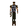

Body talisman
| Config name | body_talisman |
| Item id | 1446 |
| Value | 4 gp |
| Weight | 15g |
| Members | No |
| Tradeable | Yes |
| Stackable | No |
| Options | Locate |
| Category | talismans |
| Defined in | scripts/skill_runecraft/configs/runecraft.obj |
Body talisman
A mysterious power emanates from the talisman...
Dropped by
| NPC | Level | Quantity | Rarity | Via | Notes |
|---|---|---|---|---|---|
| 21 | 1 | 3/128 (2.34%) | |||
 Guard | 22 | 1 | 3/128 (2.34%) | ||
| 20 | 1 | 3/128 (2.34%) | |||
| 28 | 1 | 1/64 (1.56%) | |||
| 21 | 1 | 1/128 (0.78%) | free-to-play only | ||
| Guard | 22 | 1 | 1/128 (0.78%) | free-to-play only | |
| 20 | 1 | 1/128 (0.78%) | free-to-play only |
Quests
Runecrafting
Body altar: level 20, 75 xp per essence. Crafts  Body rune using
Body rune using  Body talisman.
Body talisman.
Altar at 3053, 3445 (view altar); mysterious ruins at 3050, 3442 (view ruins)
Referenced in scripts
scripts/_test/scripts/cheats/cheat_bank.rs2scripts/drop tables/scripts/giant.rs2scripts/drop tables/scripts/guard.rs2scripts/quests/quest_grail/scripts/black_knight_titan.rs2